来源：https://jrnoijjrwm.feishu.cn/docx/LpA4dmIBJobAO2xeVwkcQntvnGc
大家好，我是行者，现居深圳，23 年在生财写了 2 篇 AI 绘画精华帖。24 年潜水一年，无意中刷到亦仁的龙珠悬赏，工具使用我还是接触面比较多的，于是借着这个机会，发一篇长文。
Flux 出真人写真照片、再结合可灵、海螺等视频工具，一下子就把小红书的矩阵美女号玩爆了。
好多不玩 AI 绘画的也在问行者， 但是一问是 Flux 是要学 ComfyUI 工作流，很多人又被自己劝退了。
ComfyUI 已经进化得很快了，现在除了本地部署（需配备高性能电脑+调试环境），已经可以在线使用（比如哩布在线出图）、和租赁云端服务器（仙宫云，揽睿等云平台），开发者更是可以直接将 ComfyUI 工作流部署成小程序供用户使用，不会 SD/ComfyUI 的小白用户，完全可以使用别人部署好的工作流来出图。
本文用到的工具如下：
| 工具名称 | 工具用途 | 收费情况 | 地址 |
|---|---|---|---|
| ComfyUI（Flux）工作流 | 做 AI 写真、做电商商品图设计、视频转绘、AI 模特换装 | 本地部署免费。云端 4090 显卡每小时两千多 | 1、本地部署 |
| 哩布（blib.ai） | 在线生图工具 | 每天有免费生成次数，超过要收费 | https://www.liblib.art/、https://tusiart.com/ |
| 可灵 AI | 国产工具，AI 视频国内 TOP 级别工具 | 每天赠送 66 灵感值 | lingai.kuaishou.com |
| 飞影数字人 | 制作数字人，国产工具 | 收费 | https://flyworks.ai/login |
第一章节：Flux AI 绘画大模型介绍
第二章节：Flux 案例分享（小红书名媛、新闻女孩、Lora 使用、字节 PuLID 插件等场景）
第三章节：Flux 4 种 使用方法
这个时候，很多人都很关注 Flux 是什么了吧，接下来给大家科普下 Flux 及通过 Flux 工作流能干嘛。
ComfyUI 使用者、已使用过 Flux 的可自己跳过这一章节。
今年 3 月底，Stability AI 遭遇了资金和运营上的压力，内部动荡，联合创始人遭到解职，而关键团队成员 Robin 也决定退出。
经过 4 个月的沉寂，Stable Diffusion 的原团队再次出发，他们推出了性能卓越的开源文本到图像模型 FLUX.1，其表现在多个方面超越了 Midjourney 和 DALL-E。
这家新兴的黑马企业 Black Forest Labs 已成功获得 3200 万美元的融资支持。
经过 4 个月的时间，Robin 宣布了新的创业计划，成立了 Black Forest Labs。8 月 1 日，Black Forest Labs 发布了他们的 FLUX.1 图像生成模型。
官方博客宣称，该模型在图像细节呈现、提示词的遵循度、风格多样性以及场景复杂性方面均达到了行业领先水平。其官方网站上公布的 ELO 评分显示，FLUX.1 已经超过了 Midjourney-V6.0 和 Stable Diffusion3-Ultra 的评分。
官方网址：https://blackforestlabs.ai/
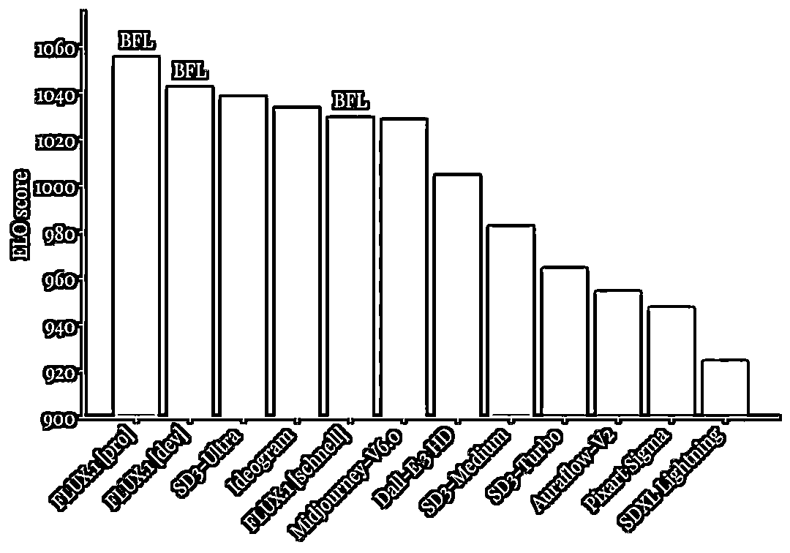
看评测说得很厉害的样子，那么 FLUX 到底厉害在哪，我们来看看优势说明。
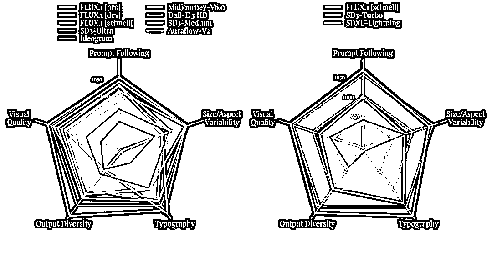
对于小白理解，简化来说就是生成的图片效果更好，分辨率更好，生成的人物手脚不会那么容易蹦。
那么接下来介绍几个 Flux 我们常见的应用场景。
FLUX 开了场 TED“真人”演讲在推特上的热度急剧上升，使用 FLUX Dev 生成图片，再到 Runway Gen3 生成视频，数字人口播已经难辩真假，更进一步推动了 FLUX 的广泛认知。
而这种效果是使用最基础的 FLUX 工作流就可以实现的，接下来我教大家怎么复刻。
打开工作流：
工作流名称： flux1-dev.json
使用说明：
1.模型存放地址：ComfyUI\models\unet
2.工作流和模型可在文末网盘下载
新闻女孩提示词：
提示词：
A captivating young china woman is captured mid-speech,exuding confidence and charm. Her long,black hair cascades down her back,and her bright,expressive face is accentuated by a subtle,sultry smile. Her piercing green eyes sparkle with intelligence as she gestures with her left hand,showcasing a delicate silver ring on her pinky finger. She holds a sleek,black microphone in her right hand,speaking with passion and convicti
She wears a fitted, The uniform is adorned with intricate,shimmering patterns that catch the light,adding a touch of sophistication and glamour. A green lanyard with multiple badges and logos hangs around her neck,featuring the "AIGC" logos prominently.
Behind her,a blurred background with a white banner containing logos and text suggests a professional or conference setting. The overall scene is vibrant and dynamic,capturing the energy of a live presentation. The woman's poised demeanor and alluring smile command attention,conveying a sense of intelligence,confidence,and subtle sensuality.
中文：
一位迷人的中国年轻女子在演讲中被捕捉到，流露出自信和魅力。她乌黑的长发垂在背上，她那明亮而富有表现力的脸被一个微妙而闷热的微笑所衬托。她用左手做手势时，那双锐利的绿眼睛闪烁着智慧的光芒，小指上戴着一枚精致的银戒指。她右手拿着一个光滑的黑色麦克风，充满激情和自信地说话
她穿着合身的制服，制服上装饰着错综复杂、闪闪发光的图案，这些图案能捕捉到光线，增添了一丝精致和魅力。她的脖子上挂着一条带有多个徽章和标志的绿色系索，上面醒目地印有“AIGC”标志。
在她身后，一个模糊的背景，上面有一个白色的横幅，上面有标志和文字，暗示着一个专业或会议环境。整个场景充满活力和动感，捕捉到了现场演示的能量。这位女士沉稳的举止和迷人的微笑吸引了人们的注意，传达出一种智慧、自信和微妙的性感。,
生成图片：
FLUX 生成的图片已经很逼真了，以前 AI 出的图，是一眼 AI，现在 AI 出的图，10 分钟都看不出是 AI 生成的。（当然自己得先过滤掉偶尔出现的瑕疵图片）
可灵转视频：
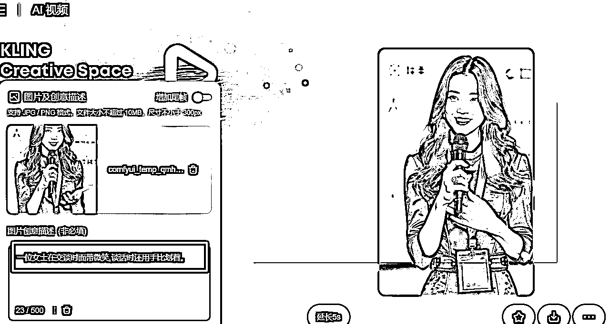
输入提示词：一位女士在交谈时面带微笑，谈话时还用手比划着。
下面是可灵生成的视频：
然后再用飞影转出数字人，创建作品。
https://flyworks.ai/login
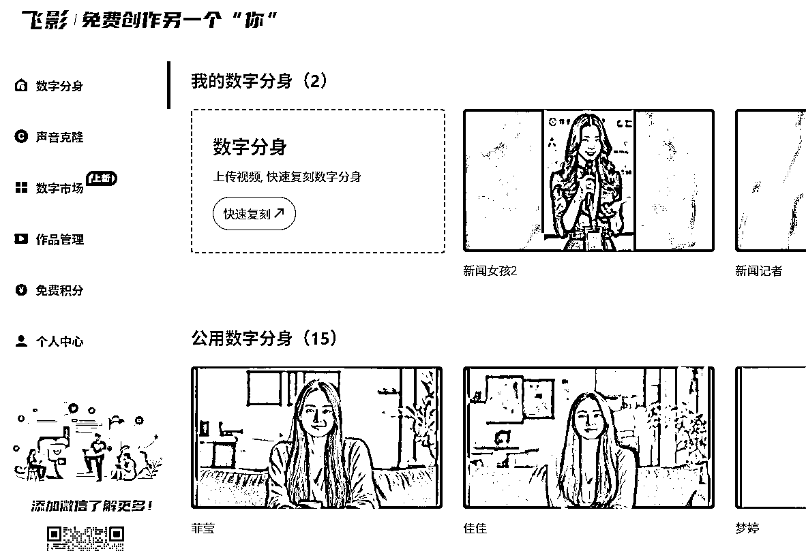
这种图的制作方法要比刚才新闻女孩的方法复杂一点，能避过小红书的 AI 检测，也能让人肉眼看不出是 AI 生成的。
在标准工作流上更换 Flux 模型，增加人脸 lora，再增加一些滤镜（如细节增强_Detaile、美颜 lora），就能起到不一样的效果。当然 AI 生成的图片偶尔还是会出现手的问题，后面还是要做一些修手，修脸的节点。
接下来就举一个基础工作流增加 LORA 的使用案例。
打开工作流：
工作流名称：FLux-lora 工作流
使用说明：
1.模型存放地址：ComfyUI\models\unet
2.lora 存放地址：ComfyUI\models\loras
打开工作流：
使用这个工作流，更换模型和 lora，即可生成逼真的，不同人脸的写实图片。
输入提示词：
英文提示词：
This is an image of a person wearing a pink and white cycling outfit, which includes a jersey, shorts, and a helmet. The person is sitting on a red bicycle, and there's a field with trees in the background. The person is wearing sunglasses and has long hair. The setting appears to be a rural or semi-rural area, given the open space and the presence of trees. The cycling outfit suggests that the person is engaged in cycling as a sport or recreational activity.
中文：
这是一张穿着粉白色自行车服的人的照片，其中包括一件运动衫、短裤和一顶头盔。这个人坐在一辆红色的自行车上，背景是一片有树的田野。此人戴着墨镜，留着长发。考虑到开阔的空间和树木的存在，环境似乎是一个农村或半农村地区。骑行装备表明该人将骑行作为一项运动或娱乐活动。
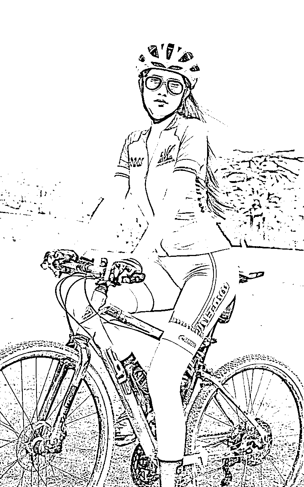
英文提示词：
The image is a high-resolution photograph featuring a young Asian woman standing outdoors on a sunny beach. She has long, straight, dark brown hair and a fair complexion. She is wearing a fitted, light grey short-sleeve top with a square neckline and a high-waisted, grey pencil skirt that accentuates her slender physique. Her outfit is stylish and modern, with a minimalist aesthetic. She is holding a small, tan leather handbag over her left shoulder, and her right hand is raised in a peace sign, adding a playful touch to her expression. The background reveals a tranquil beach scene with a clear blue sky and gentle waves lapping the shore. A tall palm tree with a smooth trunk stands to her left, and a row of white lounge chairs with cushions is positioned behind her. The beach is sandy, and a few distant figures are seen enjoying the sun and the water. The overall mood is relaxed and serene, capturing a moment of leisure and enjoyment.
中文：
这张照片是一张高分辨率照片，照片中一位年轻的亚洲女性站在阳光明媚的海滩上。她有一头又长又直的深棕色头发，皮肤白皙。她穿着一件合身的浅灰色短袖上衣，方领，高腰灰色铅笔裙，突显了她苗条的身材。她的服装时尚而现代，具有极简主义美学。她左肩上扛着一个棕色的小皮包，右手举着一个和平的手势，为她的表情增添了一丝俏皮。背景展现出宁静的海滩景色，湛蓝的天空和轻柔的海浪拍打着海岸。她左边有一棵树干光滑的高大棕榈树，身后放着一排带靠垫的白色躺椅。海滩是沙质的，可以看到几个远处的人在享受阳光和水。整体氛围轻松宁静，捕捉到一瞬间的悠闲和享受。

英文提示词：
This is a photo of a person standing on a street. The individual is holding a pink teddy bear and a bottle of water. They are wearing a white dress with a black cardigan, and their hair is styled in loose waves. The person is also wearing a watch on their left wrist. The background shows a residential area with houses and a car parked on the street. The sky is overcast, suggesting it might be a cloudy day. The person appears to be posing for the photo, and the overall mood of the image is casual and relaxed.
中文：
这是一张站在街上的人的照片。这个人拿着一只粉红色的泰迪熊和一瓶水。他们穿着白色连衣裙和黑色开衫，头发梳成松散的波浪形。此人的左手腕上还戴着一块手表。背景显示了一个有房子和停在街上的汽车的住宅区。天空阴沉，预示着可能是阴天。这个人似乎在为照片摆姿势，图像的整体情绪是随意和放松的。
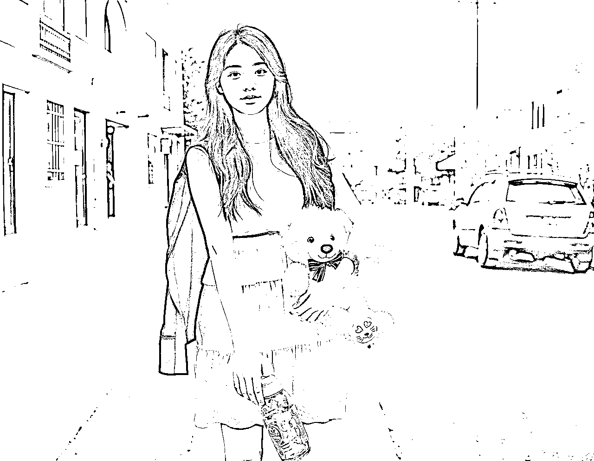
这里要简单说一下，提示词的来源：
第一种，在哩布、吐司、或者 C 站上，模型和 lora 页面，作者和创造者会提供提示词，我们复制下来即可。
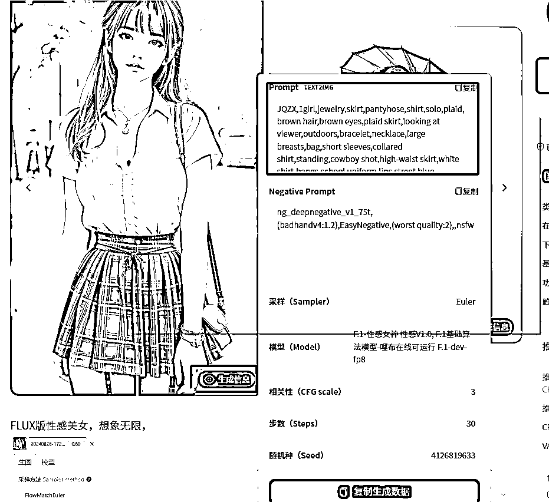
第二种方法，就是使用一些工具进行反推：
反推提示词工具有很多，比如 SD，WD14，以及下面的这个工具。
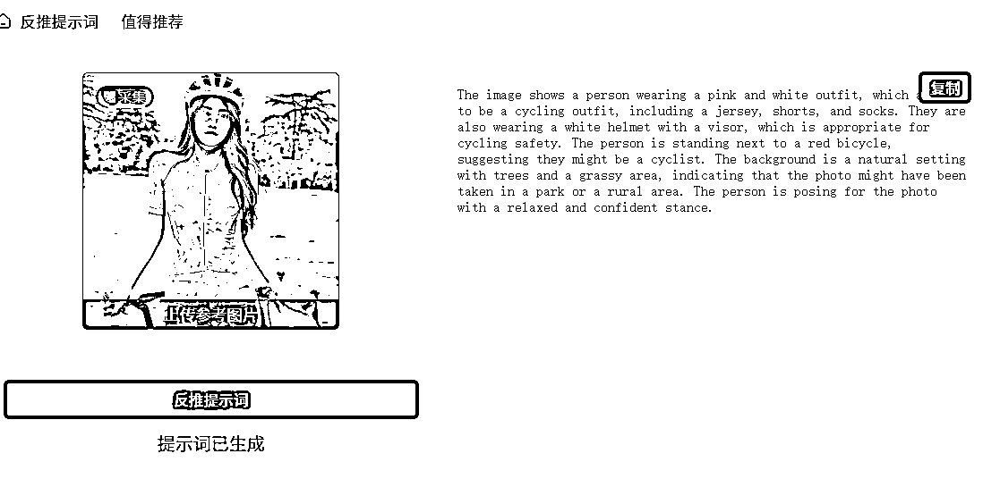
第三种方法，就是反推提示词工作流：
比如使用 Joy_caption 插件，进行反推，Joy_caption 是目前反推提示词最好的插件了，
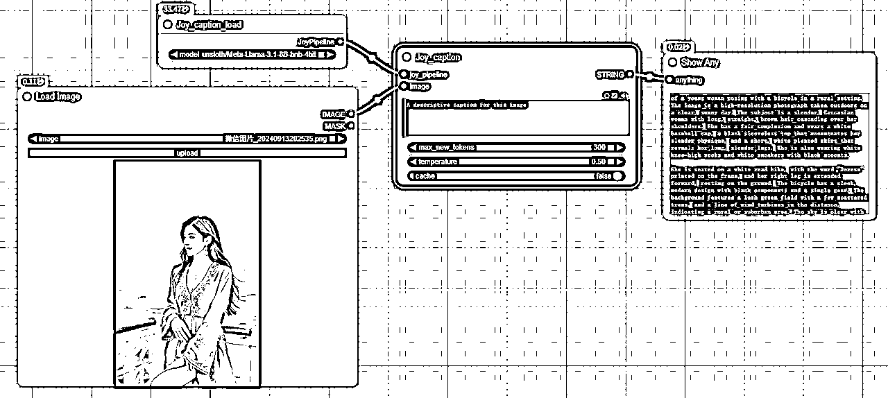
当然，还有高阶的方法，比如使用图生图工作流、WD14 反推提示词节点，大模型反推，IP-Adapter 风格迁移等方法。
上一步提到的基于 FlUX 训练的模型和 lora，可以在哩布等在线平台下载。
Flux 生态已经很成熟了，有好多创作者炼制了各种风格、类型的 lora。
简单一点，在使用工作流时替换 lora，生成的模特就是不同 STYLE，御姐、萝莉都到碗里来。
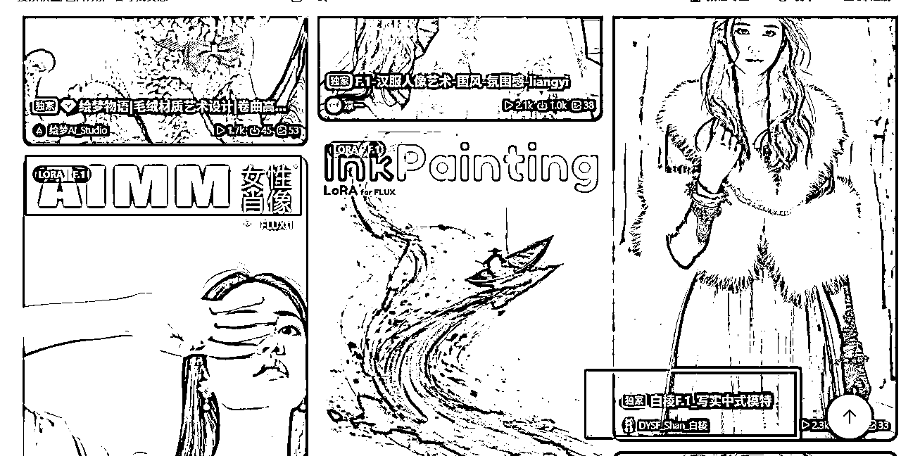
使用的墨幽随拍-F.1_v1 出的图片：
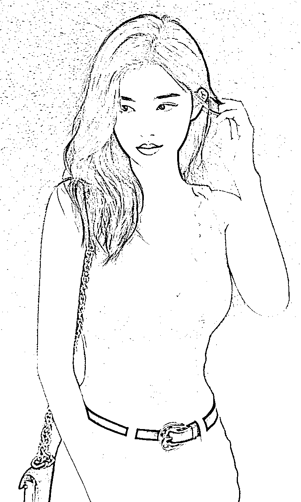
使用不同清一色高级西装 lora 出的图片：
使用方法也简单：
1.在模型或者 lora 页面，看到满意的图片，点击 一键生图 在线生成图片
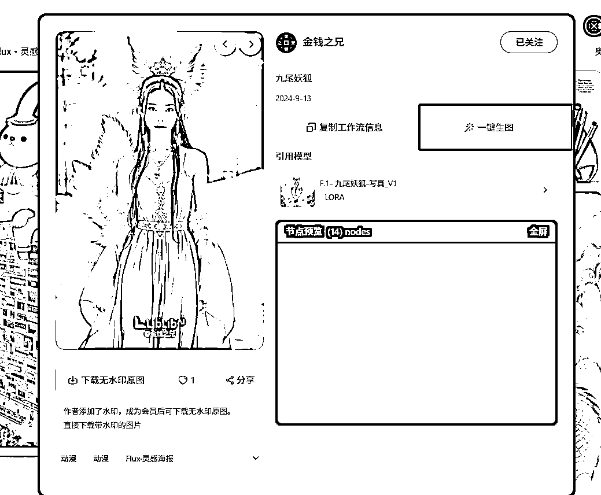
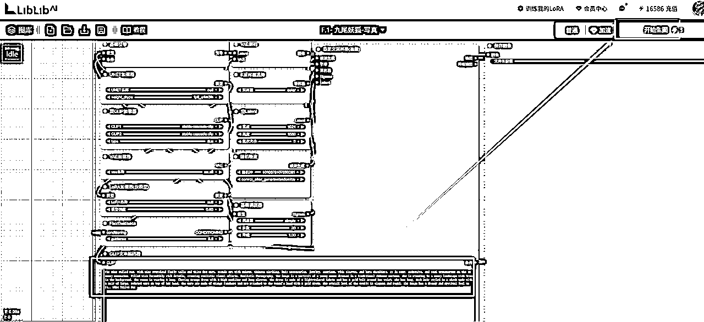
第二种，是下载模型和 lora，放入本地 ComfyUI 文件夹中，可参考上面新闻女孩，小红书两个小节。
目前 ComfyUI 中已经支持 PuLID 换脸插件，但是比较安装使用复杂了点。
可以使用下字节 PuLID 官网来体验。
PuLID 换脸插件已支持在线使用了，在官方网站上，即可一键出图（有使用次限制）
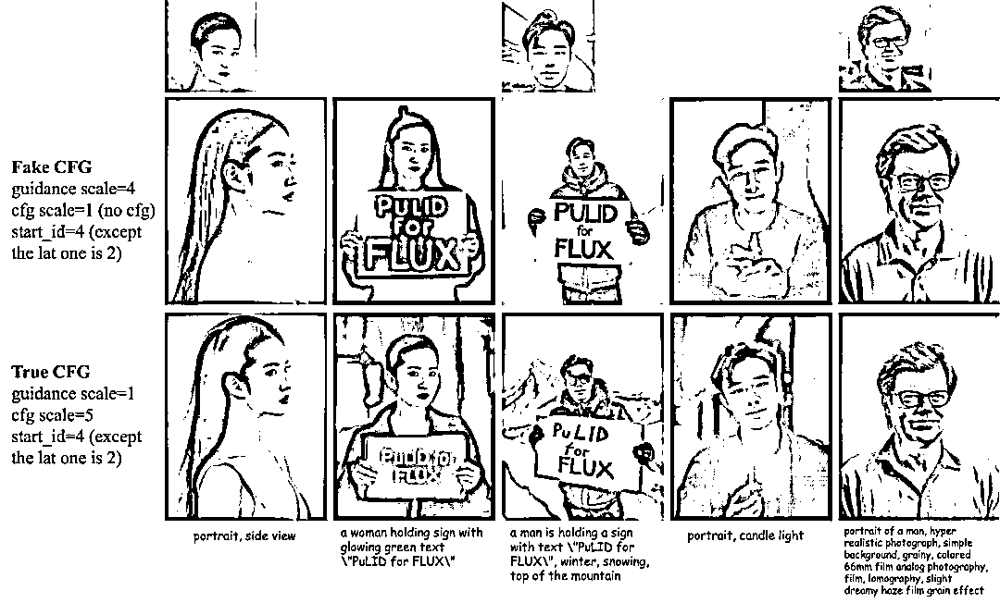
Flux Pulid 在线体验：https://huggingface.co/spaces/yanze/PuLID-FLUX
我试了下，左边是模特图，右侧是 AI 生成的效果图，使用 PuLID 默认的神仙姐姐作为模特：
提示词：This is an image of a person wearing a pink and white cycling outfit， which includes a jersey， shorts， and a helmet。 The person is sitting on a red bicycle, and there's a field with trees in the background. The person is wearing sunglasses and has long hair. The setting appears to be a rural or semi-rural area, given the open space and the presence of trees. The cycling outfit suggests that the person is engaged in cycling as a sport or recreational activity
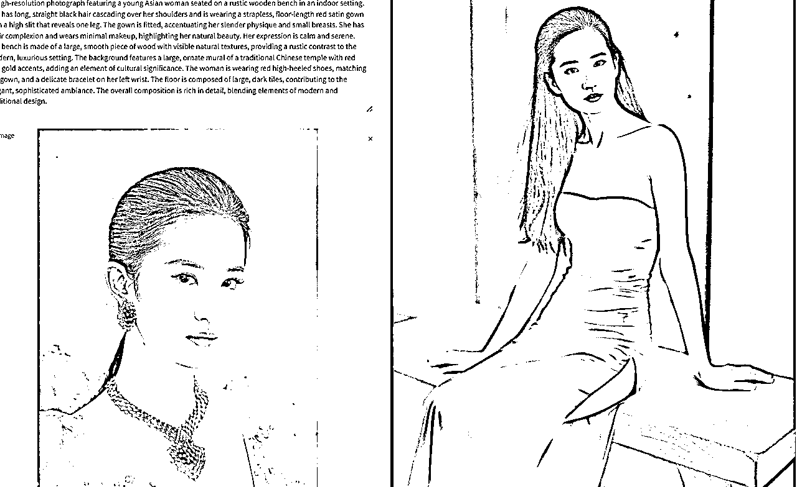
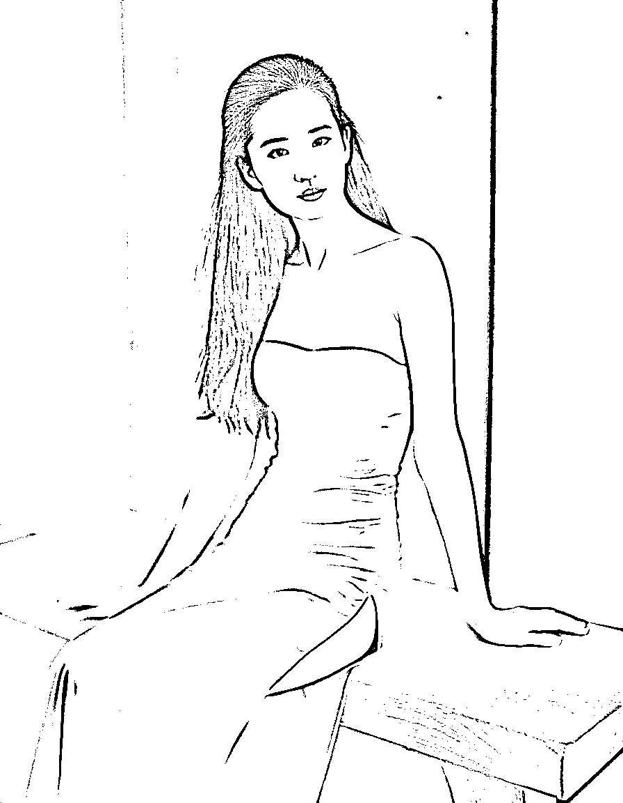
提示词：This is a high-resolution photograph featuring a young Asian woman standing indoors。 She has a slender physique and fair skin, with long, straight, dark brown hair cascading over her shoulders. Her facial features are delicate, with large, almond-shaped eyes accentuated by subtle makeup, and a full, pink-lipped smile. She wears a form-fitting, lavender-hued dress that highlights her hourglass figure, featuring thin spaghetti straps and a low V-neckline.
In her hands, she holds a small, decorative folding fan with a floral design, adding a touch of elegance to her appearance. Her nails are manicured and her makeup is subtle, with a focus on her eyes and lips. The background consists of a rich, red rose wall mural, creating a romantic ambiance. The setting appears to be a cozy, dimly lit café or lounge, with a wooden table and chairs visible to the right, and a warm, ambient lighting from fairy lights adding a soft glow to the scene. The overall composition is elegant and intimate, with a focus on the subject's serene and confident demeanor.
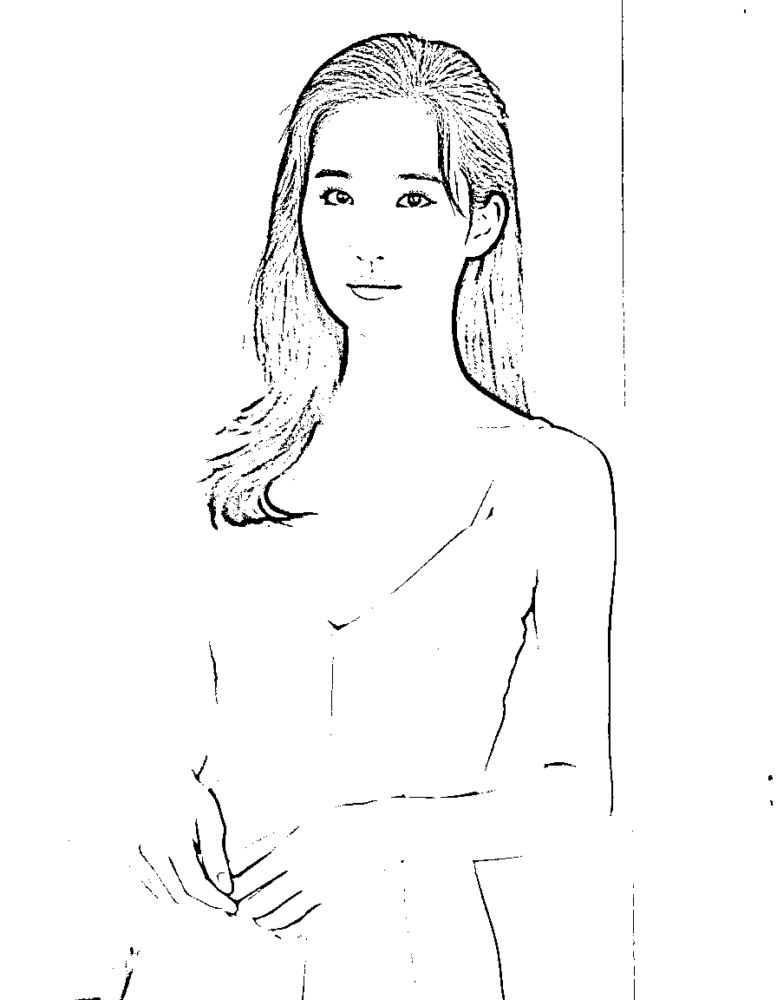
目前，字节 PuLID 体验有使用次数限制，出到第五张图就报错了。如果要继续使用，那得多注册几个账号来薅算力了。
从使用效果来说，肯定是没有自己训练的 Flux lora 效果要好。但是比较训练 lora 是一个技术活，足以难住大部分人。使用 Flux PuLID 一致性风格迁移，是否能满足需求，那得自己评估了。
当然，我们还是期待 PuLID 能早点支持 ComfyUI 调用，这样就能在节点中自己添加 lora，ControlNet 模型，放大，修复等节点。
首先简单科普下 ComfyUI，Flux 模型的主要使用方式是 ComfyUI（SD webUI 也可以）。
ComfyUI 是一个基于节点流程式的 stable diffusion AI 绘图工具， 你可以把它想象成集成了 stable diffusion 功能的 substance designer， 通过将 stable diffusion 的流程拆分成节点，实现了更加精准的工作流定制和完善的可复现性。（但节点式的工作流也提高了一部分使用门槛。)
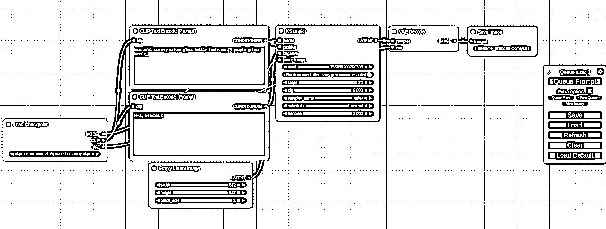
小伙伴们可以去看我在星球的精华帖《ComfyUI 宝典-新手入门和使用手册》。
文章地址 https://t.zsxq.com/fkupy
如何使用 FLUX.1？ 最便捷的方式是在开源平台 Replicate 上可用。
Black Forest Labs 官网：https://blackforestlabs.ai。
在线体验方式：
体验地址：https://replicate.com/black-forest-labs
官方的 3 个版本，提供了在线体验的环境。
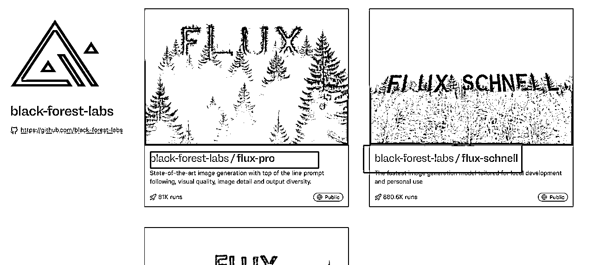
以 flux-dev 开发版为例，打开页面，输入提示词，选择分辨率，点击运行即可，在 1 分钟内就生成图片。
LIBLIB 平台提供在线的 FLUX.1 工作流，内置了模型，使用时只需要点击一键运行即可。
哩布上已经有多个开发者发布了 Flux 在线工作流，可在工作流区域，选择使用。
https://www.liblib.art/workflows
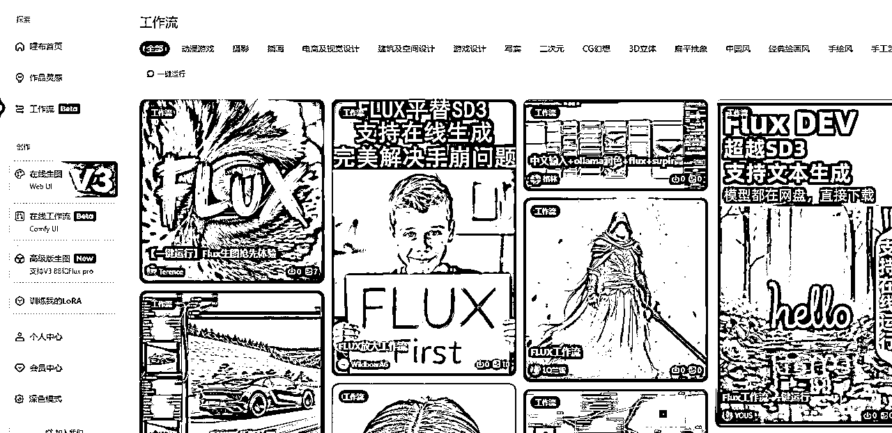
打开工作流后，输入提示词，点击右上角的开始生图，即可使用。（普通用户每天送一定作图使用额度，哩布冲会员生成图片速度会快点，）
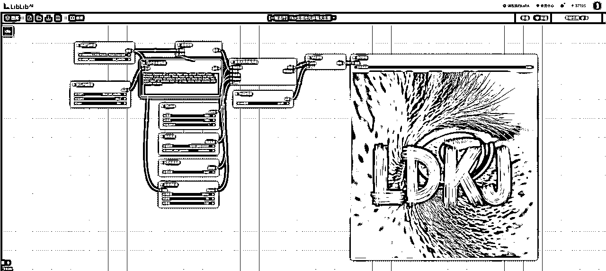
在使用 ComfyUI 工作流时经常遇到插件安装，模型下载的问题，创作者（平台方）可以在云端部署 ComfyUI 镜像包，用户租赁云平台服务器，即可使用平台的显卡资源和创作者部署好的工作流。
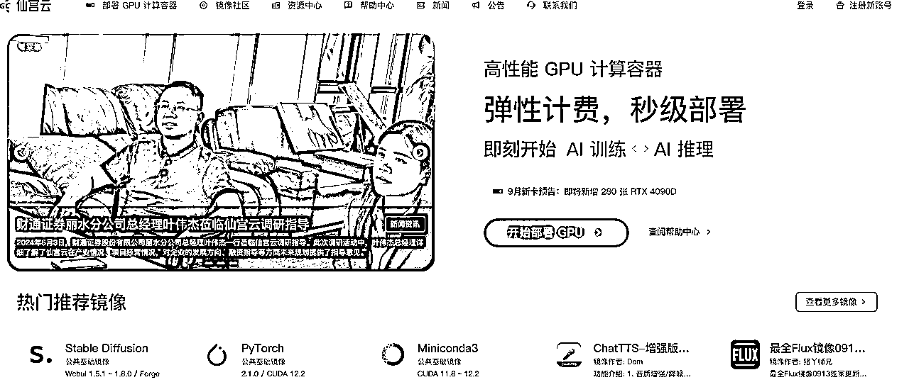
ComfyUI 的本地安装有两种方式：下载官方纯净版，以及整合包（如葉 aaaki 大神、Blender 无限圣杯）。官方纯净版不带插件和模型，环境比较稳定。整合包会内置常用插件，基础模型，插件的安装和升级更方便。
本地安装 ComfyUI 的硬件环境是：Windows 系统，NVIDIA 显卡，显存 6G 以上。
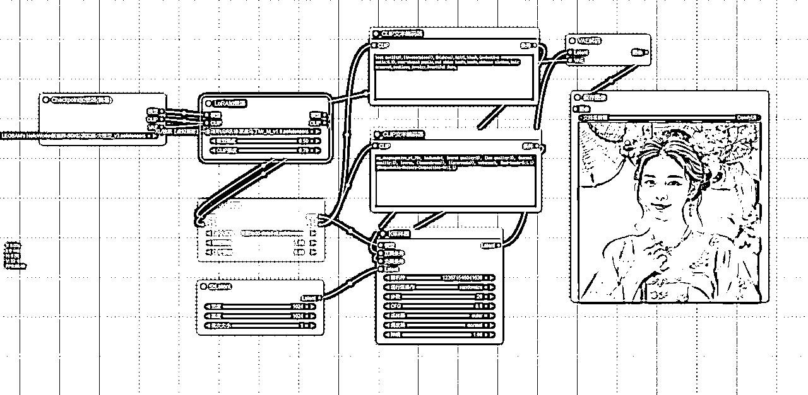
ComfyUI 的最新版本现已兼容 Flux 模型，您只需将 ComfyUI 升级至最新版即可享受这一新功能。
ComfyUI 官方文档：https://comfyanonymous.github.io/ComfyUI_examples/flux/
github 地址： https://github.com/black-forest-labs/flux
Flux 模型，工作流：
链接： https://pan.baidu.com/s/14SQpi0PIMNROnjD-kKKLdg?pwd=9c38 提取码： 9c38
最后再介绍一下我自己，我是行者，IP 定位是 AI 绘画视频。
主要方向： AI 绘画，AI 视频，ComfyUI 工作流的玩法等。